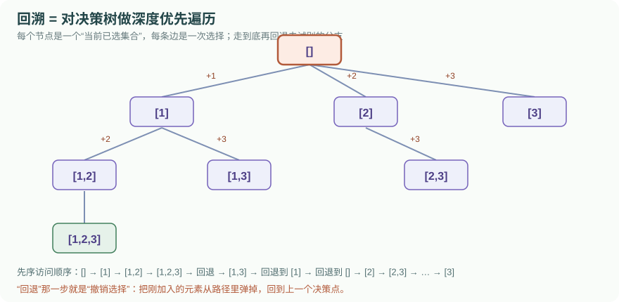
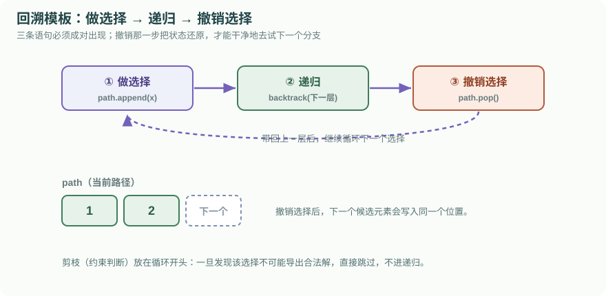
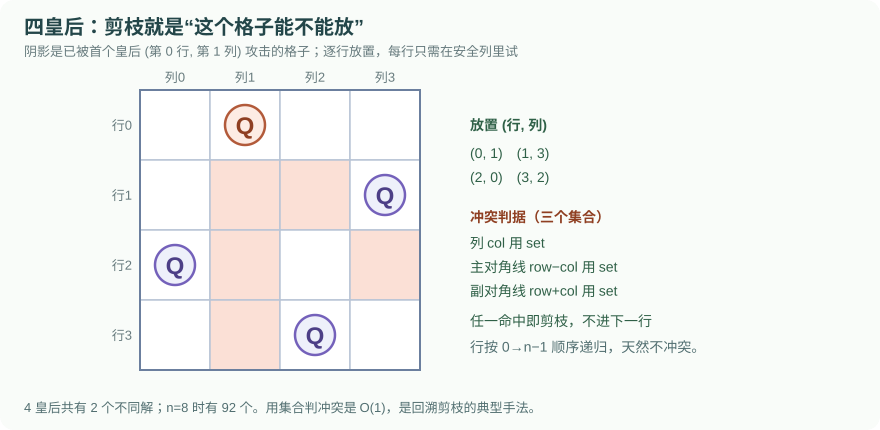

回溯算法：走不通就退回来
枚举所有可能、又不能重复地枚举，是很多问题的共同需求。把问题画成一棵决策树，再对它做深度优先遍历——“做选择、递归、撤销选择”——就能系统地走遍每条路，并在没希望时提前回头。
走迷宫：走不通就退回
想象你走进一个大迷宫，每到一个分岔口就要选一条路。选错了呢？你只能原路返回，回到上一个分岔口换一条；如果还是死路，就再往回退，直到走出去。这个“深入地走、碰壁就退回、换个选择再试”的过程，就是回溯。
要枚举“所有可能且满足某条件”的方案时，朴素做法是列一个巨大的候选表逐个检查；回溯则为一种更聪明的穷举——它不预先列出所有方案，而是边构造边检查，一旦发现当前的部分选择已经不可能凑出合法解，就立即回头。这使它在许多实际数据上远快于“先全部枚举再筛”。
本章先建立“决策树”的图像，再给出回溯的统一模板，最后用全排列、子集、组合与 N 皇后四个经典问题把它练熟。回顾上一章的递归：回溯就是递归里的“试错版”。
回溯的本质：决策树的 DFS
把所有可能的选择按顺序摊开，就得到一棵决策树：根是“尚未做任何选择”，每个节点是一个中间状态，每条边是一次选择，叶子是一个完整方案（合法解或死路）。那么“枚举所有方案”就等价于遍历这棵树的每个节点。

回溯用深度优先遍历这棵树：沿着一条路一直深入，直到无路可走或已找到一个解，再退回上一个决策点换分支。三个要素决定了整棵树长什么样：
- 选择：当前步骤有哪些候选项？（决定分支的宽度）
- 约束：什么条件下当前部分路径已不可能导出合法解？（决定哪些分支可被剪掉）
- 目标：什么状态算一个完整解？（决定什么时候把路径收进结果集）
标配模板：做选择 → 递归 → 撤销选择
尽管问题千变万化，回溯的代码骨架几乎不变。它有一个统一的循环结构，只要把“选择列表”和“约束”填进去即可：

def backtrack(path, choices):
if 满足目标条件:
result.append(path[:]) # 拷贝一份，不要存引用
return
for choice in choices:
if 不满足约束:
continue # 剪枝：跳过没希望的分支
path.append(choice) # 做选择
backtrack(path, 下一层选择) # 递归
path.pop() # 撤销选择注释里的 path[:] 不是风格洁癖，而是必须的第一步。Python 的列表是引用类型：如果直接 result.append(path)，存入的只是一个指向同一列表的引用，而后续递归会不断修改这个列表，最终结果集里的每一项都会变成最后一次的状态。所以“加入结果集时一定拷一份”。
全排列与“拷贝路径”陷阱
全排列是最标准的回溯练习：每一步从“还未用过”的元素里选一个，选到长度等于 n 时就得到一个排列。因为顺序不同算不同解，所以需要用 used[] 标记哪些元素已被使用，而不能像子集那样用“往后选”去重。
def permute(nums):
result, used = [], [False] * len(nums)
def backtrack(path):
if len(path) == len(nums):
result.append(path[:]) # 拷贝！
return
for i, value in enumerate(nums):
if used[i]:
continue # 剪枝：已用过的不再选
path.append(value); used[i] = True
backtrack(path)
path.pop(); used[i] = False # 撤销
backtrack([])
return result注意 used[i] = True 也要在递归后还原，否则“撤销”只做了一半，兄弟分支会误以为该元素仍在使用。这正是模板里“成对出现”的提醒。
生成顺序：先序 DFS 的输出
固定输入 [1, 2, 3]，拖动滑块查看第 1 到第 6 个被加入结果集的排列。
子集与组合：start 去重与剪枝
子集和排列的关键区别在“去重方式”。排列关心顺序，[1,2] 与 [2,1] 不同；子集不关心顺序，它们算同一个。因此子集不用 used，而用一个 start 下标：每一层只从 start 往后选，保证任何组合只会以“下标递增”的顺序生成一次。
def subsets(nums):
result = []
def backtrack(start, path):
result.append(path[:]) # 每个节点都是一个子集
for i in range(start, len(nums)):
path.append(nums[i])
backtrack(i + 1, path) # i+1：只能往后选
path.pop()
backtrack(0, [])
return result子集也可以用迭代法或位运算枚举：n 个元素每个只有“选/不选”两种状态，共 2ⁿ 种子集，每个二进制掩码 mask 的“1 位”就对应一个子集。三种写法结果一致，但回溯版更容易加上约束。
组合是子集的“限量版”：从 1..n 里选恰好 k 个。除了同样的 start 去重，还能用“剩余元素数不够”来剪枝：第 i 个候选之后还剩 n−i+1 个数，如果不足以凑齐还缺的 k−len(path) 个，就无需再试。
def combine(n, k):
result = []
def backtrack(start, path):
if len(path) == k:
result.append(path[:])
return
for i in range(start, n + 1):
if n - i + 1 < k - len(path): # 剩余不够，直接收尾
break
path.append(i)
backtrack(i + 1, path)
path.pop()
backtrack(1, [])
return result若元素可重复使用（如“组合总和”），只需把递归参数从 i+1 改回 i，表示当前候选仍可选。把输入先排序，还能在“当前候选已大于剩余目标”时直接 break，一次性砍掉后面整段分支。
N 皇后：对角线剪枝
N 皇后要求在 N×N 棋盘上放 N 个互不攻击的皇后（不同行、不同列、不同对角线）。因为每行恰好一个皇后，可以逐行放置，把问题变成“每行选一个列”。把行号从 0 递增递归，就自然满足了“不同行”这个约束。

剩下的两个约束可以压缩成两个数：主对角线上 row − col 恒定，副对角线上 row + col 恒定。于是用三个集合分别存已占用的列、主对角线和副对角线，判冲突只需 O(1)。
def solve_n_queens(n):
result = []
def backtrack(row, cols, diag1, diag2, placement):
if row == n:
result.append(tuple(placement))
return
for col in range(n):
d1, d2 = row - col, row + col
if col in cols or d1 in diag1 or d2 in diag2:
continue # 冲突，剪枝
cols.add(col); diag1.add(d1); diag2.add(d2); placement.append(col)
backtrack(row + 1, cols, diag1, diag2, placement)
cols.discard(col); diag1.discard(d1); diag2.discard(d2); placement.pop()
backtrack(0, set(), set(), set(), [])
return result解的个数随 n 增长
拖动滑块选择棋盘大小，查看互不攻击的摆法数量（已知序列）。
剪枝的效果非常直接：不加约束时每行 n 个列就有 nⁿ 种组合，而实际搜索树被大幅剪掉。若还想进一步压常数量级，可以用整数位图代替集合（第 i 位表示第 i 列是否被占），但那属于竞赛优化，面试中集合版的可读性更好。
回溯 vs DP 与优化三板斧
回溯和动态规划都靠递归展开子问题，但目标不同，不能混用：
| 维度 | 回溯 | 动态规划 |
|---|---|---|
| 目标 | 枚举全部解或可行方案 | 求最优值或方案数 |
| 子问题 | 通常不重叠（重叠就不用枚举了） | 必须重叠，靠状态复用加速 |
| 复杂度 | 指数级（解本身就可能有指数多个） | 多项式级 |
| 关键动作 | 撤销选择，恢复状态 | 状态转移，不需要撤销 |
| 典型题 | 全排列、N 皇后、组合总和 | 背包、编辑距离、最长公共子序列 |
一句话记：要把所有解都列出来，用回溯；只要一个最优值或个数，且子问题重叠，用 DP。有些题两者都能做（比如背包），但 DP 通常更优；强制枚举所有方案时，就只能用回溯。
回溯的优化主要有三招：剪枝（提前砍掉不可能的分支，如 N 皇后的冲突判断、组合的剩余数量判断）；记忆化（缓存已搜过的状态，避免重复搜索——这已经在向 DP 靠拢）；调整搜索顺序（先试“更可能成功”的选择，让可行解尽早出现、剪枝尽早生效）。注意剪枝只能砍掉不可能的分支，绝不能砍掉合法解，否则答案就错了。
带走三个判断准则
- 要“列出所有解”就用回溯：把候选选择画成决策树，对树做 DFS，每个叶子是一个解。
- “撤销选择”是回溯区别于普通递归的关键：它保证同一层的兄弟分支互不污染状态。
- 剪枝不改答案、只砍没希望的分支；一旦子问题大量重叠、只求最优或计数，就该换成动态规划。
继续学习与校验资料
- Backtracking — 决策树、剪枝与经典八皇后
- Python 数据结构教程 — 列表可变性与引用语义
- 上一章：递归与分治 — 回溯建立在递归之上
- 运行参考：
examples/backtracking.py；测试：tests/test_backtracking.py